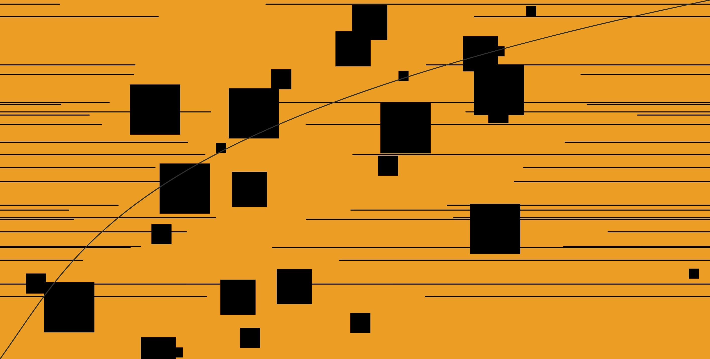
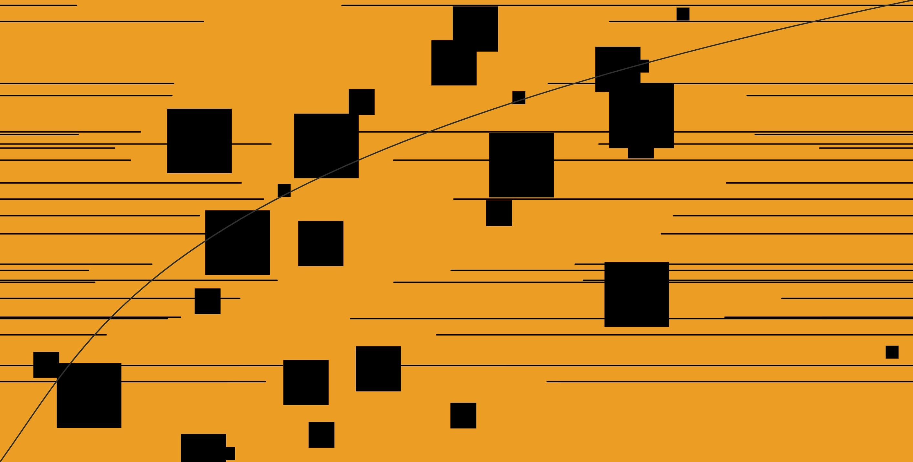

Babeldom Experimental - Babble
Graphic Interactive Experience, 2020
This is an experimental 4D piece that is part of a semester-long series of projects that displays the conceptual aspects and qualities of a word of our choosing, which is 'Babeldom'.

Babeldom:
- A confused mix of voices, languages, or words and ideas.
- A state [or condition] of noisy confusion and chaotic activity.
- A multiplicity of mutually unintelligible languages.
 

This experimental piece, which I named Babble, is similar to the 'Babeldom 4D' piece in that it explores chaos through visuals and noise. Unlike the 4D piece however, this is interactive as users can directly press random letter keys to produce visuals on the screen and corresponding noises made from the human mouth. Users can also press the spacebar to change the background and, if they wish to save their artwork, the return/enter key.


This piece is inspired by Patatap, a web applet that produces visuals and music upon the press of random keys.
For a more in-depth look at this piece and other projects in the series based on the word 'Babeldom', go on this link.